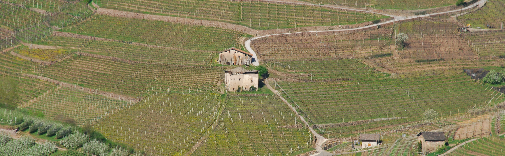
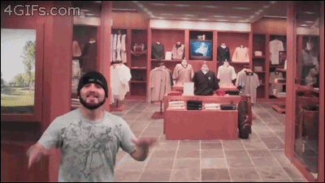
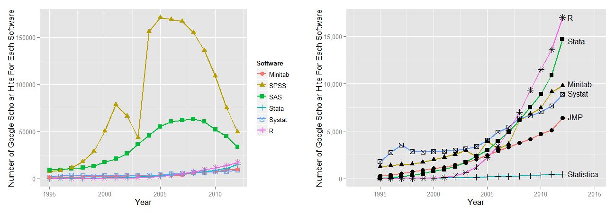
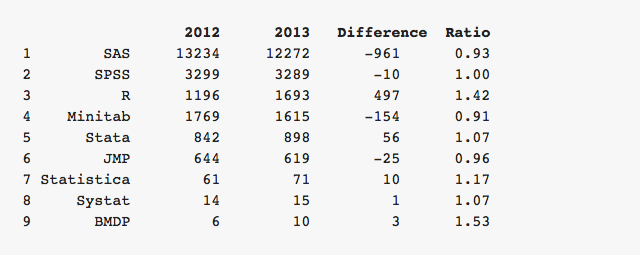

Hello world !
Séance 1 - TD : statistiques appliquées
par Etienne Delay / etienne.delay@unilim.fr Photo: CC by-nc-nd Marie A.-C.Présentation
En quelques mots
- La vie n'est pas un long fleuve tranquille (parcours personnel)
- Doctorant en géographie au laboratoire GEOLAB
- Sujet : les dynamiques paysagères des territoires viticoles de montagne
2 terrains d'étude
- Banyuls-sur-Mer (France)
- Le Val di Cembra (Italie)
2 territoires éloignés mais avec beaucoup de similarités : la viticulture héroïque, coopérative, double-activité…
Ma spécialité
La programmation à base d'agents
Présentation des outils
Pour faire tomber les idées reçues
Statistiques ≠ Microsoft Excel ?
Une petite liste Les logiciels libres
Libres parce que : 4 libertés fondamentales
- liberté d'utiliser
- liberté de copier
- liberté d'étudier le logiciel (accessibilité du code)
- liberté de modification et de redistribution des versions modifiées
Quelles attentes peut-on avoir face aux logiciels libres?
- Une communauté d'utilisateurs et de développeurs
- Un système en évolution (importance des versions)
- Un système adapté aux besoins des utilisateurs…
- …mais qui ne peut pas se faire sans les utilisateurs (importance de la remontée de bugs, du partage d'expérience)
Ce n'est pas pareil que l'achat d'un logiciel propriétaire…
clientélisme
Exemples
Libre office
- né en 2010 après le rachat d'OpenOffice par Oracle
- volonté de la communauté de garder une branche libre d'OpenOffice
- Refus d'Oracle de céder le nom "OpenOffice"
- Développement d'un nouveau logiciel sur les bases de l'ancien
- Distribué sous licence GNU LGPL3
R
- Dérivé du langage S par John Chambers et ses collègues dans les années 80
- Il est à la fois un langage de programmation et un logiciel de statistiques
- Il est diffusé sous licence GNU

De bonnes raisons d'utiliser R
 Robert A. Muenchen, The Popularity of Data Analysis Software, consulté sur http://r4stats.com/articles/popularity/ le 31/12/2013De bonnes raisons d'utiliser R
 Robert A. Muenchen, The Popularity of Data Analysis Software, consulté sur http://r4stats.com/articles/popularity/ le 31/12/2013Objectifs
Objectifs du TD
- Mobiliser des outils statistiques au bon moment (médiane, moyenne, écart-type…)
- Savoir interpréter des résultats
- Se former à un outil logiciel
Organisation du cours
- Chaque groupe est fixe
- Un exercice à faire par semaine (mis en ligne dimanche, à rendre jeudi)
- Pour les questions je suis disponible par mail : quelques règles (netiquette)
Organisation de l'évaluation
Vous connaissez les règles
maintenant à vous de jouerVertical Slides
Slides can be nested inside of other slides, try pressing down.
Basement Level 1
Press down or up to navigate.
Basement Level 2
Cornify

Basement Level 3
That's it, time to go back up.
Slides
Not a coder? No problem. There's a fully-featured visual editor for authoring these, try it out at http://slid.es.
Point of View
Press ESC to enter the slide overview.
Hold down alt and click on any element to zoom in on it using zoom.js. Alt + click anywhere to zoom back out.
Works in Mobile Safari
Try it out! You can swipe through the slides and pinch your way to the overview.
Marvelous Unordered List
- No order here
- Or here
- Or here
- Or here
Fantastic Ordered List
- One is smaller than...
- Two is smaller than...
- Three!
Transition Styles
You can select from different transitions, like:
Cube -
Page -
Concave -
Zoom -
Linear -
Fade -
None -
Default
Themes
Reveal.js comes with a few themes built in:
Default -
Sky -
Beige -
Simple -
Serif -
Night
Moon -
Solarized
* Theme demos are loaded after the presentation which leads to flicker. In production you should load your theme in the <head> using a <link>.
Global State
Set data-state="something" on a slide and "something"
will be added as a class to the document element when the slide is open. This lets you
apply broader style changes, like switching the background.
Custom Events
Additionally custom events can be triggered on a per slide basis by binding to the data-state name.
Reveal.addEventListener( 'customevent', function() {
console.log( '"customevent" has fired' );
} );
Slide Backgrounds
Set data-background="#007777" on a slide to change the full page background to the given color. All CSS color formats are supported.
Image Backgrounds
<section data-background="image.png">Repeated Image Backgrounds
<section data-background="image.png" data-background-repeat="repeat" data-background-size="100px">Background Transitions
Pass reveal.js the backgroundTransition: 'slide' config argument to make backgrounds slide rather than fade.
Background Transition Override
You can override background transitions per slide by using data-background-transition="slide".
Clever Quotes
These guys come in two forms, inline:
“The nice thing about standards is that there are so many to choose from”
and block:
“For years there has been a theory that millions of monkeys typing at random on millions of typewriters would reproduce the entire works of Shakespeare. The Internet has proven this theory to be untrue.”
Pretty Code
function linkify( selector ) {
if( supports3DTransforms ) {
var nodes = document.querySelectorAll( selector );
for( var i = 0, len = nodes.length; i < len; i++ ) {
var node = nodes[i];
if( !node.className ) {
node.className += ' roll';
}
}
}
}
Courtesy of highlight.js.
Intergalactic Interconnections
You can link between slides internally, like this.
Fragmented Views
Hit the next arrow...
... to step through ...
any type- of view
- fragments
Fragment Styles
There's a few styles of fragments, like:
grow
shrink
roll-in
fade-out
highlight-red
highlight-green
highlight-blue
current-visible
highlight-current-blue
Spectacular image!

Export to PDF
Presentations can be exported to PDF, below is an example that's been uploaded to SlideShare.
Take a Moment
Press b or period on your keyboard to enter the 'paused' mode. This mode is helpful when you want to take distracting slides off the screen during a presentation.